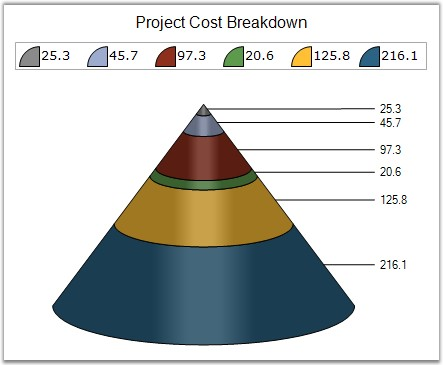
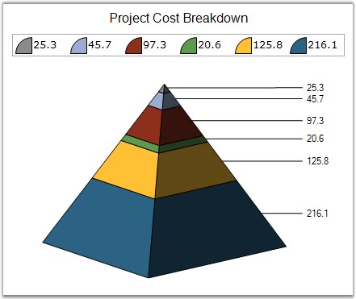
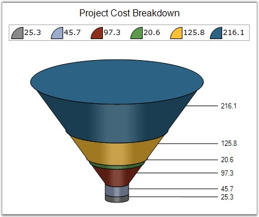
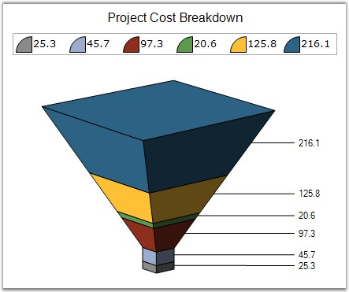

Specifies the drawing style for the funnel or pyramid chart base.
|
Details | |
|
Possible Values |
· Circle - Renders the chart with a circular base. · Square - Renders the chart with a square base. |
|
Default Value |
· Funnel Chart - Circle · Pyramid Chart - Square |
|
2D / 3D Limitations |
3D Only |
|
Applies to Chart Element |
All series |
|
Applies to Chart Types |
Funnel and Pyramid |
Here is some sample code.
|
[C#]
// Setting FigureBase For Pyramid Chart this.chartControl1.Series[0].ConfigItems.PyramidItem.FigureBase = ChartFigureBase.Circle; this.chartControl1.Series[0].ConfigItems.PyramidItem.FigureBase = ChartFigureBase.Square;
// Setting FigureBase For Funnel Chart this.chartControl1.Series[0].ConfigItems.FunnelItem.FigureBase = ChartFigureBase.Circle; this.chartControl1.Series[0].ConfigItems.FunnelItem.FigureBase = ChartFigureBase.Square; |
|
[VB.NET]
' Setting FigureBase For Pyramid Me.chartControl1.Series(0).ConfigItems.PyramidItem.FigureBase=ChartFigureBase.Circle Me.chartControl1.Series(0).ConfigItems.PyramidItem.FigureBase=ChartFigureBase.Square
' Setting FigureBase For Funnel Chart Me.chartControl1.Series(0).ConfigItems.FunnelItem.FigureBase = ChartFigureBase.Circle Me.chartControl1.Series(0).ConfigItems.FunnelItem.FigureBase = ChartFigureBase.Square |
Pyramid Chart

Figure 129: Pyramid Chart with Figure Base = " Circle"

Figure 130: Pyramid Chart with Figure Base ="Square"
Funnel Chart

Figure 131: Funnel Chart with Figure Base ="Circle"

Figure 132: Funnel Chart with Figure Base ="Square"
See Also